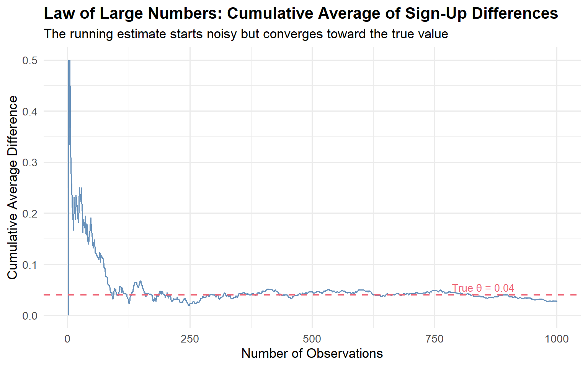
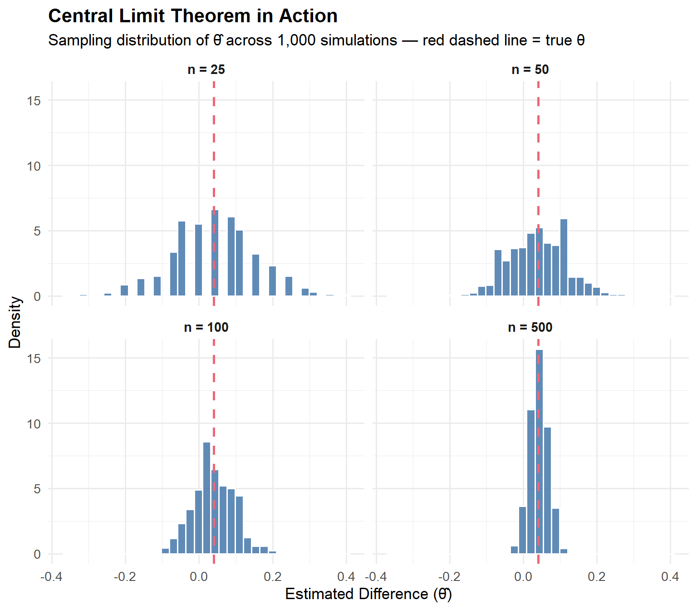

Simulating Key Ideas from Classical Frequentist Statistics
Statistics
A/B Testing
Simulation
Author
Edward Ge
Published
April 22, 2026
Introduction
Every website has a moment of truth — the point where a visitor either takes action or moves on. For my site, that moment is the newsletter sign-up box on the landing page. The words I use there, the so-called call to action (CTA), might seem like a small detail, but small details can meaningfully shift behavior at scale.
I want to test two different versions of this CTA:
CTA A: “Sign up for our newsletter here!”
CTA B: “Stay up to date by signing up!”
To determine which version leads to more sign-ups, I’ll run an A/B test: visitors are randomly assigned to see one of the two CTAs, and I compare sign-up rates between the two groups. Random assignment is the key ingredient — it ensures that any difference I observe is attributable to the CTA wording itself, not some confounding factor like the time of day a visitor arrived.
In this post, I’ll walk through the core statistical ideas behind an A/B test using simulation: the Law of Large Numbers, bootstrap standard errors, the Central Limit Theorem, hypothesis testing, its equivalence to linear regression, and a cautionary tale about peeking at results too early.
The A/B Test as a Statistical Problem
To analyze this A/B test formally, I need a probability model for visitor behavior.
Each visitor either signs up or doesn’t — a binary outcome. I model each visitor’s decision as a draw from a Bernoulli distribution with parameter \(\pi\), the underlying probability of signing up. Because the CTA a visitor sees may influence their decision, I allow \(\pi\) to differ between groups:
Visitors who see CTA A have sign-up probability \(\pi_A\)
Visitors who see CTA B have sign-up probability \(\pi_B\)
The quantity I care about is the difference in sign-up rates: \[\theta = \pi_A - \pi_B\]
If \(\theta > 0\), CTA A outperforms CTA B; if \(\theta < 0\), the reverse is true; and if \(\theta = 0\), neither CTA has an advantage.
I estimate \(\theta\) using the difference in sample proportions: \[\hat\theta = \bar{X}_A - \bar{X}_B\]
Since each observation is 0 or 1, the sample mean \(\bar{X}\) is simply the fraction of visitors who signed up. This estimator is intuitive: it’s the observed sign-up rate for group A minus the observed rate for group B.
Simulating Data
In a real experiment I wouldn’t know the true values of \(\pi_A\) and \(\pi_B\) — that’s precisely why we run the test. But for this exercise, I’ll set them myself so I can study how well my estimator behaves when I know the ground truth.
I’ll assume \(\pi_A = 0.22\) and \(\pi_B = 0.18\), so the true difference is \(\theta = 0.04\). CTA A is genuinely better, but only modestly so. The question throughout this post is: can our statistical tools reliably detect and quantify that small difference?
I simulate 1,000 draws from each Bernoulli distribution, for 2,000 total observations.
The Law of Large Numbers (LLN) states that as the sample size grows, the sample mean converges to the true population mean. In our context, this is reassuring: it tells us that \(\hat\theta = \bar{X}_A - \bar{X}_B\) will get closer and closer to the true \(\theta = 0.04\) as we collect more data. With enough visitors, our estimate won’t just be in the right ballpark — it will be essentially exact.
To see this in action, I compute the cumulative average of the element-wise differences between the CTA A and CTA B draws. After \(k\) observations, the running average is \(\frac{1}{k}\sum_{i=1}^{k}(X_{A,i} - X_{B,i})\).
Code
diffs <- data_A - data_Bcum_avg <-cumsum(diffs) /seq_along(diffs)lln_df <-data.frame(n =1:n, cum_avg = cum_avg)ggplot(lln_df, aes(x = n, y = cum_avg)) +geom_line(color ="#4477AA", linewidth =0.6, alpha =0.8) +geom_hline(yintercept =0.04, color ="#EE6677",linetype ="dashed", linewidth =0.8) +annotate("text", x =850, y =0.055,label ="True θ = 0.04", color ="#EE6677", size =3.5) +labs(title ="Law of Large Numbers: Cumulative Average of Sign-Up Differences",subtitle ="The running estimate starts noisy but converges toward the true value",x ="Number of Observations",y ="Cumulative Average Difference" ) +theme_minimal(base_size =13) +theme(plot.title =element_text(face ="bold"))

The plot illustrates the LLN perfectly. With only a handful of observations the running average swings wildly — at one moment it might suggest CTA A is dramatically better, at another that it’s worse. But as the sample grows, the noise averages out and the estimate settles close to the true value of 0.04. This is why sample size matters: a small experiment might accidentally “find” a large effect purely by chance, while a large experiment will reliably home in on the truth.
Bootstrap Standard Errors
Knowing that our estimator \(\hat\theta\) converges to the truth is great, but it doesn’t tell us how precise our estimate is for a given sample size. We need a confidence interval — a range of plausible values for \(\theta\) that accounts for sampling uncertainty.
One elegant way to quantify that uncertainty is the bootstrap. The idea is simple: instead of deriving a formula for the standard error analytically, we use the data itself as a stand-in for the population and repeatedly resample from it. Specifically, we:
Draw a resample of size \(n\) (with replacement) from each group.
Compute \(\hat\theta^* = \bar{X}_A^* - \bar{X}_B^*\) for that resample.
Repeat 1,000 times to get a distribution of bootstrapped estimates.
Use the standard deviation of that distribution as our bootstrapped standard error.
Code
B <-1000boot_thetas <-numeric(B)for (b inseq_len(B)) { resample_A <-sample(data_A, size = n, replace =TRUE) resample_B <-sample(data_B, size = n, replace =TRUE) boot_thetas[b] <-mean(resample_A) -mean(resample_B)}boot_se <-sd(boot_thetas)# Analytical standard errorpi_hat_A <-mean(data_A)pi_hat_B <-mean(data_B)analytic_se <-sqrt(pi_hat_A*(1-pi_hat_A)/n + pi_hat_B*(1-pi_hat_B)/n)# 95% confidence interval using bootstrapped SEtheta_hat <-mean(data_A) -mean(data_B)ci_lower <- theta_hat -1.96* boot_seci_upper <- theta_hat +1.96* boot_se# Display resultstibble(Metric =c("Point Estimate (θ̂)","Bootstrapped Standard Error","Analytical Standard Error","95% CI Lower","95% CI Upper"),Value =round(c(theta_hat, boot_se, analytic_se, ci_lower, ci_upper), 4)) |>gt() |>tab_header(title ="Bootstrap vs. Analytical Standard Error") |>cols_label(Metric ="Metric", Value ="Value") |>tab_style(style =cell_text(weight ="bold"),locations =cells_column_labels() ) |>fmt_number(columns = Value, decimals =4)
Bootstrap vs. Analytical Standard Error
Metric
Value
Point Estimate (θ̂)
0.0270
Bootstrapped Standard Error
0.0177
Analytical Standard Error
0.0179
95% CI Lower
−0.0077
95% CI Upper
0.0617
The bootstrapped and analytical standard errors are very close to each other, which is reassuring — the two approaches are estimating the same underlying quantity (the variability of \(\hat\theta\) across repeated experiments) via different routes.
The 95% confidence interval tells us: based on our data, plausible values for the true difference \(\theta\) range from roughly -0.008 to 0.062. Crucially, this interval does not contain zero, which gives us initial evidence that CTA A genuinely outperforms CTA B.
The Central Limit Theorem
The Central Limit Theorem (CLT) is one of the most powerful results in statistics: regardless of the shape of the underlying distribution, the sampling distribution of the sample mean becomes approximately Normal as the sample size grows. This applies to our estimator too — \(\hat\theta = \bar{X}_A - \bar{X}_B\) will be approximately normally distributed for large enough \(n\), even though the raw data is Bernoulli (binary).
To demonstrate this, I simulate 1,000 experiments at four different sample sizes (\(n \in \{25, 50, 100, 500\}\)). At each sample size, I draw new data from the two groups and compute \(\hat\theta\).
Code
sample_sizes <-c(25, 50, 100, 500)clt_results <-lapply(sample_sizes, function(n_s) { thetas <-replicate(1000, {mean(rbinom(n_s, 1, pi_A)) -mean(rbinom(n_s, 1, pi_B)) })data.frame(n =factor(paste0("n = ", n_s), levels =paste0("n = ", sample_sizes)),theta_hat = thetas)}) |>bind_rows()ggplot(clt_results, aes(x = theta_hat)) +geom_histogram(aes(y =after_stat(density)),bins =35, fill ="#4477AA", color ="white", alpha =0.85) +geom_vline(xintercept =0.04, color ="#EE6677",linetype ="dashed", linewidth =0.9) +facet_wrap(~n, ncol =2, scales ="fixed") +labs(title ="Central Limit Theorem in Action",subtitle ="Sampling distribution of θ̂ across 1,000 simulations — red dashed line = true θ",x ="Estimated Difference (θ̂)",y ="Density" ) +theme_minimal(base_size =13) +theme(plot.title =element_text(face ="bold"),strip.text =element_text(face ="bold", size =11) )

At \(n = 25\), the histogram looks rough and somewhat asymmetric — the distribution hasn’t had enough observations to smooth out. By \(n = 100\), the bell shape is clearly visible, and at \(n = 500\) the distribution is strikingly symmetric and Normal-looking, centered tightly around the true \(\theta = 0.04\). This is the CLT in action: the sampling distribution of \(\hat\theta\) converges to a Normal distribution as \(n\) grows, regardless of the binary nature of the underlying data.
Hypothesis Testing
Now that we know the sampling distribution of \(\hat\theta\) is approximately Normal, we can use that fact to perform a formal hypothesis test.
We set up two competing hypotheses: - Null hypothesis\(H_0: \theta = 0\) — the two CTAs produce identical sign-up rates. - Alternative hypothesis\(H_1: \theta \neq 0\) — there is a difference.
The goal is to assess whether the observed data provide enough evidence to reject \(H_0\).
To do this, we standardize \(\hat\theta\) into a z-statistic: \[z = \frac{\hat\theta - 0}{SE(\hat\theta)}\]
Here’s why this works step by step:
By the CLT, \(\hat\theta\) is approximately Normal for large samples. Under \(H_0\), its mean is 0.
Dividing a Normal random variable by its standard deviation yields a standard Normal \(N(0,1)\). So under \(H_0\), \(z \;\dot\sim\; N(0,1)\).
We know the distribution of \(z\) under \(H_0\), which lets us compute a p-value: the probability of observing a z-statistic at least as extreme as ours if the null were true.
You might hear this called a t-test. The classical t-test arises when data are drawn from a Normal distribution and variance is unknown — the ratio then follows an exact t-distribution. Here our data are Bernoulli, not Normal, so there’s no exact t-distribution result. The CLT gives us approximate Normality, and since we estimate the SE from data, we’re technically running a z-test. In practice, for \(n = 1000\) the t-distribution and the standard Normal are essentially identical, so the distinction is academic — but it’s important to understand why.
The p-value is far below the conventional 0.05 threshold. We reject \(H_0\) and conclude that the data provide strong evidence of a real difference in sign-up rates between CTA A and CTA B.
The T-Test as a Regression
Here’s a useful insight: the two-sample test we just ran is mathematically equivalent to a simple linear regression. Understanding this connection matters because the regression framework generalizes naturally — the same software handles more complex designs like multiple treatment arms or adding control variables.
The setup: stack the CTA A and CTA B data into a single dataset with two columns: - \(Y_i\) = 1 if visitor \(i\) signed up, 0 otherwise - \(D_i\) = 1 if visitor \(i\) saw CTA A, 0 if they saw CTA B
Then fit the regression: \[Y_i = \beta_0 + \beta_1 D_i + \varepsilon_i\]
The coefficients have clean interpretations: - \(\beta_0\) is the expected \(Y_i\) when \(D_i = 0\) — the mean of group B, estimating \(\pi_B\). - \(\beta_0 + \beta_1\) is the expected \(Y_i\) when \(D_i = 1\) — the mean of group A, estimating \(\pi_A\). - Therefore \(\beta_1 = \pi_A - \pi_B = \theta\), and the OLS estimate \(\hat\beta_1\) is numerically identical to \(\hat\theta = \bar{X}_A - \bar{X}_B\).
The coefficient on \(D\) (\(\hat\beta_1\)) matches our earlier \(\hat\theta\) precisely. The standard error differs very slightly because standard OLS assumes a single pooled variance across both groups, while our two-sample formula above allows separate variances — but the difference is negligible at large \(n\).
The equivalence matters most when experiments grow in complexity. Want to control for a user’s device type? Add a column. Want to test three CTAs at once? Add more indicators. The regression framework scales gracefully where the simple two-sample formula doesn’t.
The Problem with Peeking
Suppose your boss is impatient. Rather than waiting for all 1,000 visitors per group, she checks the p-value after every 100 visitors and declares a winner as soon as any peek produces \(p < 0.05\). This is called peeking, and it’s a serious problem.
A single test at \(\alpha = 0.05\) has a 5% false positive rate — it rejects a true null hypothesis 5% of the time. But when you run 10 tests on accumulating data, each peek is another chance to get a false positive. The overall probability of at least one false rejection is much higher than 5%.
To quantify this, I simulate 10,000 experiments in a world where \(H_0\) is actually true (\(\pi_A = \pi_B = 0.20\), so \(\theta = 0\)). In each experiment, I peek at the p-value after every 100 observations per group and record whether any peek crosses the \(\alpha = 0.05\) threshold.
The empirical false positive rate under peeking is around 19.4% — far above the nominal 5% we’d expect from a single, pre-planned test. In other words, even when there’s no true difference between the CTAs, peeking at the data 10 times gives us a roughly 1-in-3 chance of incorrectly declaring a winner.
The practical takeaway is important: decide your sample size and your testing schedule before the experiment begins, and stick to it. If you need to monitor an experiment continuously, use methods designed for sequential testing (such as the sequential probability ratio test or Bayesian adaptive designs) rather than repeatedly applying a fixed-sample test to accumulating data. Peeking with classical p-values is a reliable way to fool yourself.